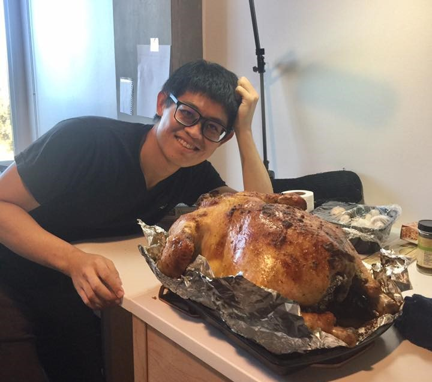

I am a first year master student in University of California San Diego. I recieved my bachelor degee from National Chiao Tung University in Taiwan. Before joining UCSD, I worked as a research assistant in Computer Vision Research Center in NCTU. I was an exchange student in University of Illinois at Urbana Champaign during my junior year and was a research intern in Cornell University. My areas of research interest are computer vision, image processing, machine learning, and deep learning.
When I am not coding, I am a great cook. I enjoy cooking Chinese cuisine for my friends. And, I roast turkey at Thanksgiving.
